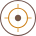

<section class="target-selection">
    <header>
        <p>Select Target</p>
    </header>
    <div class="target-list-wrapper">
        <div class="top-bar">
            <div class="target-image-wifi-wrapper">
                <div class="target-and-image">
                    
                    <p>Target</p>
                </div>
                <div (click)="reScan()" class="connect-to-wifi">
                    Scan
                </div>
            </div>
        </div>

        <div class="target-list" *ngIf="myTargets; else noTargets">


<!--            <div [class.connected]="targetConnected === true" *ngIf="primaryTarget; else noPrimary"-->
<!--                 class="target-rectangle regular"-->
<!--                 (click)="onTargetChosen(primaryTarget)">{{primaryTarget.name}}</div>-->

<!--            <ng-template #noPrimary>-->
<!--                <div class="noPrimary">-->
<!--                    <span>You currently have not defualt target.</span>-->
<!--                    <span>Please choose from the list below the deisred target and press Reconnect</span>-->
<!--                </div>-->
<!--            </ng-template>-->


            <div [class.connected]="target.targetConnected === true" *ngFor="let target of myTargets"
                 class="target-rectangle regular"
                 (click)="onTargetChosen(target)">{{target.name}}</div>
        </div>
        <button [class.btn-disable]="!this.selectedTarget ||this.selectedTarget.targetConnected===false"
                [disabled]="!this.selectedTarget || this.selectedTarget.targetConnected===false"
                class="startSession" (click)="startTraining()"> START SESSION
        </button>
    </div>
    <ng-template #noTargets>
        <div class="noConnection">
            <p>No Targets Found Please Check Your Connection</p>
            
        </div>
    </ng-template>
</section>


